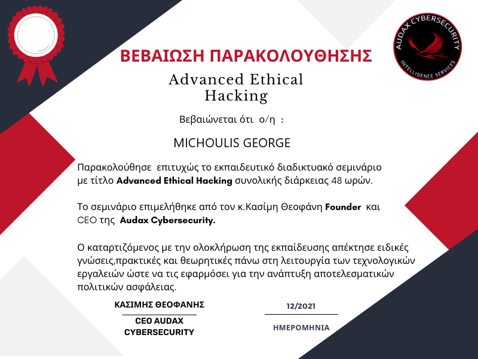

Room 1Introduction
I'm George Michoulis, a blockchain developer and researcher based in Thessaloniki, Greece. I write smart contracts, use graph-based machine learning, and build full-stack Web3 systems. I work remotely.
I studied Applied Informatics at the University of Macedonia, and my thesis there was on verifying academic credentials with Ethereum. For my MSc in Data and Web Science at Aristotle University of Thessaloniki, funded by a DeepMind scholarship, I worked on graph-embedding methods for detecting fraud on blockchains.
The work has three sides. As a researcher, in papers and in startup work, I ask how effective ledgers are and what they change in practice. As a builder I make NFT and DeFi products and data science with graph embeddings, shipping in Solidity, TypeScript and the cloud. And I teach: I've lectured in networks, security and application development, and I speak in public about Web3 and edge technology.
G. M.
Room 2Practice
2015–2020
BSc Applied Informatics
University of Macedonia
My thesis was on verifying academic credentials with Ethereum.
2020–2021
Basic Research grant
Award, University of Macedonia
2020–2022
MSc Data and Web Science
Aristotle University of Thessaloniki
Funded by a DeepMind scholarship. I worked on graph-embedding methods for blockchain fraud detection.
June 2022
3rd place, Infinitech Hackathon
Award, Crowdpolicy
2022–2024
Blockchain and full-stack developer
University of Nicosia / IFF
I built large Next.js, NestJS and Docker applications, and a Web3 NFT marketplace.
2023–2025
Lecturer and academic partner
University of Derby / Mediterranean College
I taught Networks and Security, Web Scripting and Application Development, and set assessment with inclusivity first.
2024–2026
Blockchain developer and researcher
Sidroco Holdings Ltd
An NFT marketplace for 5G, Hyperledger Fabric prototypes, an Erasmus+ learning management system, and multinational EU projects.
2025
Move/Sui Bootcamp Thessaloniki award
Award. The certificate hangs in room 3 as object 3.10.
May 2026 to now
Web3 full-stack developer
Cyberscope by TAC
I build Web3 products end to end: contracts, on-chain integrations, React and Next frontends, and security tooling.
Room 3Evidence
Ten documents from courses, programmes and awards, hung one at a time and large enough to read. Another 24 are listed in storage at the end of this room, and every one of them opens its full scan.





In storage
The other 24 documents. Each title opens the full scan.
- S.01Bachelor degree, Computer ScienceDegree certificate
- S.02TOEIC listening and reading testCertificate of achievement
- S.03European Legal Culture program, Aristotle University of ThessalonikiCertificate of completion
- S.04Cloud engineeringCertificate of completion
- S.05Cybersecurity eLearning AcademyCertificate of completion
- S.06Digital skills for tourismCertificate of completion
- S.07Discover customerCertificate of completion
- S.08Entrepreneurship, funding and development of new enterprisesCertificate of completion
- S.09How to design and build a websiteCertificate of completion
- S.10Networking essentialsCertificate of completion
- S.11Software development for telecommunication networksCertificate of completion
- S.12The Hour of CodeCertificate of completion
- S.13Blockchain for the legal industry: how is the…Certificate of participation
- S.14Blockchain in education: remote learning, social distancing and…Certificate of participation
- S.15Data analytics to strengthen healthcare cybersecurityCertificate of participation
- S.16EY Cyber DayCertificate of participation
- S.17GNU/Linux command lineCertificate of participation
- S.18Launch event, RippleX workshopCertificate of participation
- S.19Migma marketing kai brandCertificate of participation
- S.20Marine educational robotics, Hydrobot programCertificate of participation
- S.21Processing data in the fog: the example of…Certificate of participation
- S.22SKGcode project: creation of a real estate chatbotCertificate of participation
- S.23VeChain ToolChain: digital transformation of the healthcare industryCertificate of participation
- S.24English proficiencyEnglish certificate


Room 4Built works
Seven websites I built, each shown as I captured it. The labels describe only what is on the screen.


Reading roomPapers
Eight papers, most cited first. The 2020 paper introduces VerDe, whose website hangs in room 4.
- A process-aware approach for blockchain-based verification of academic qualificationsSimulation Modelling Practice and Theory 121, 102642. 202232citations
- Verification of academic qualifications through Ethereum blockchain: an introduction to VerDeXIV Balkan Conference on Operational Research. 202011citations
- Exploring decentralized governance: a framework applied to Compound FinanceInternational Conference on Mathematical Research for Blockchain Economy. 20237citations
- FraMark: a blockchain marketplace for 5G network management using fractional NFTs7th World Symposium on Communication Engineering (WSCE). 20241citation
- Data security for smart cities20251citation
- Unlocking 5G network slicing: a survey on blockchain marketplaces utilizing NFTs, AI, and advanced resource managementIEEE ICCE 2025. 20250citations
- Graph embedding and node features for drug-target interaction predictionAristotle University of Thessaloniki, MSc work. 20220citations
- Blockchain in higher education: permissioned and permissionless approaches4th Summit on Gender Equality in Computing. 20220citations
Also on the shelf: two Greek-language theses on verifying academic titles with Ethereum, from 2020 and 2021. The full record is on Google Scholar.